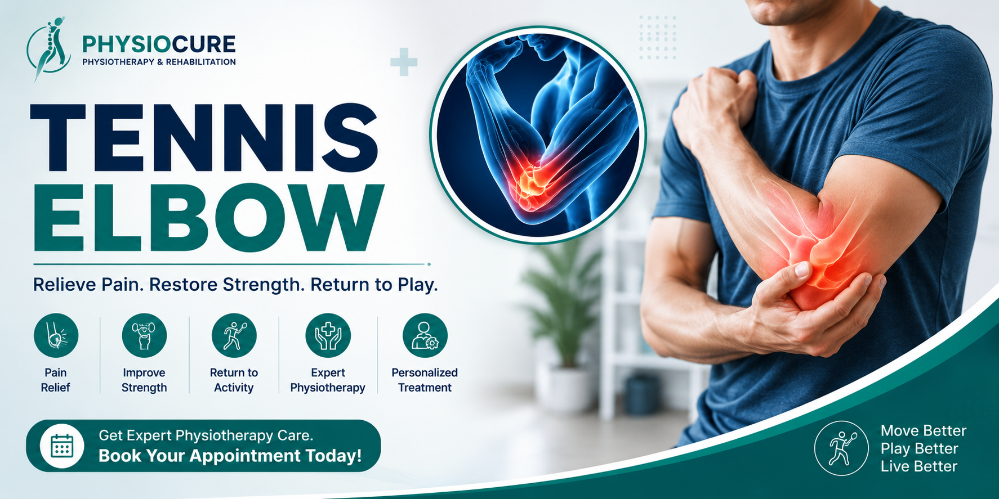

Tennis Elbow (Lateral Epicondylitis)
Tennis Elbow is a painful condition affecting the tendons on the outside of the elbow. Despite its name, it is not limited to tennis players. It commonly affects people who repeatedly use their hands and forearms, such as office workers, plumbers, electricians, painters, carpenters, cooks, and computer users. Physiotherapy is one of the most effective treatments to relieve pain and restore normal arm function.

What is Tennis Elbow?
Tennis Elbow, medically known as Lateral Epicondylitis, occurs when the tendons connecting the forearm muscles to the outer part of the elbow become irritated or damaged due to repetitive movements. Small tears develop in the tendon, leading to pain, weakness, and difficulty performing everyday tasks.
Although athletes can develop Tennis Elbow, most patients are non-athletes whose jobs or hobbies involve repeated gripping, lifting, typing, or twisting movements.
Common Symptoms
- Pain on the outer side of the elbow
- Pain while lifting objects
- Weak hand grip
- Pain while shaking hands
- Difficulty opening jars
- Pain while typing
- Pain during racquet sports
- Forearm weakness
- Pain while carrying bags
Common Causes
- Repetitive wrist movements
- Repeated lifting activities
- Sports such as tennis or badminton
- Computer and mouse overuse
- Gardening
- Painting
- Carpentry work
- Using hand tools
- Poor lifting technique
Who is at Risk?
- Tennis and badminton players
- Office workers
- Computer professionals
- Electricians
- Plumbers
- Carpenters
- Painters
- Mechanics
- People aged between 30 and 60 years
How Physiotherapy Helps
Physiotherapy reduces pain, promotes tendon healing, improves strength, and restores normal movement. Early treatment can prevent chronic elbow pain and reduce the need for injections or surgery.
- Pain relief therapy
- Manual therapy
- Soft tissue mobilization
- Tendon strengthening exercises
- Stretching exercises
- Grip strengthening
- Activity modification advice
- Home exercise program
Recommended Exercises
- Wrist Extensor Stretch
- Wrist Flexor Stretch
- Grip Strengthening Exercise
- Eccentric Wrist Extension
- Towel Twist Exercise
- Forearm Pronation and Supination
- Finger Extension Exercise
Exercises should be performed only under the supervision of a qualified physiotherapist to avoid worsening the condition.
Prevention Tips
- Warm up before sports.
- Use proper sports techniques.
- Take breaks during repetitive work.
- Strengthen your forearm muscles.
- Maintain correct posture while working.
- Avoid excessive gripping force.
- Use ergonomic equipment.
- Do not ignore early elbow pain.
When Should You Visit a Physiotherapist?
- Elbow pain lasting more than one week.
- Difficulty lifting everyday objects.
- Weak grip strength.
- Pain interfering with work or sports.
- Persistent pain despite rest.
- Difficulty performing daily activities.
Frequently Asked Questions
Can Tennis Elbow heal without surgery?
Yes. Most patients recover successfully with physiotherapy, activity modification, and strengthening exercises without surgery.
How long does Tennis Elbow take to recover?
Most patients improve within 6 to 12 weeks, although recovery may take longer depending on the severity and duration of the condition.
Should I stop all activities if I have Tennis Elbow?
Not necessarily. Your physiotherapist will advise which activities to modify and which exercises will help your recovery while keeping you active.
Can Tennis Elbow return after treatment?
Recurrence is uncommon when strengthening exercises, ergonomic advice, and proper activity techniques are followed consistently.
Need Relief from Tennis Elbow?
Our experienced physiotherapists provide comprehensive assessment, evidence-based physiotherapy treatment, tendon rehabilitation, and personalized exercise programs to help you return to work, sports, and everyday activities without pain.
Contact Us